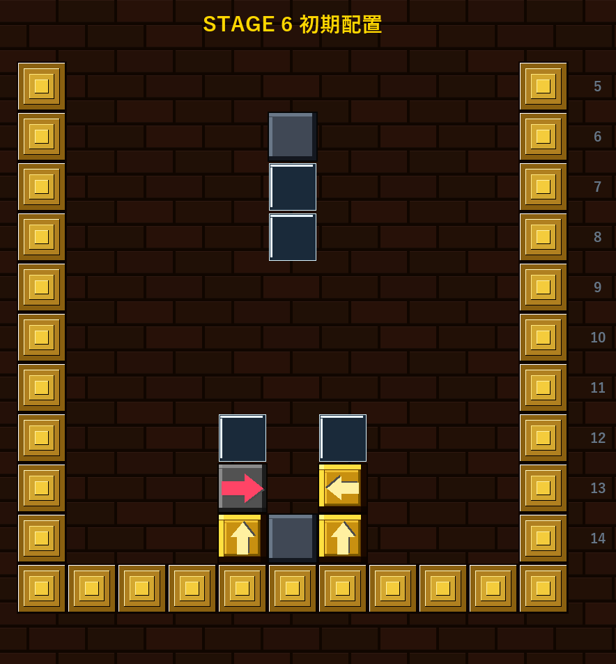
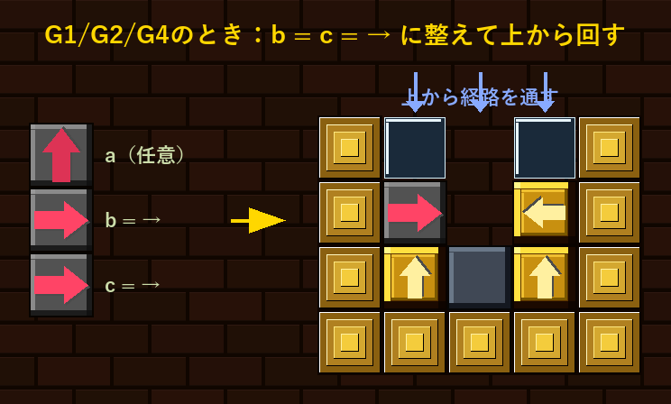

フィールド中央に灰壁→ガラス壁×2が積み重なっています。 その下の左右に金色ブロック（↑）が2つ固定されており、 これらをループで消すのが目標です。 最下段の中央には固定の灰壁があり、左右の金色ブロックの間を塞いでいます。
最初に落ちてくるピースの種類によって、攻略の難易度が変わります。
回転（Z）と変換（X）で向きを整えてループを完成させましょう。 左右の金色ブロックが向き合う配置を活かしてそのまま対処できます。
回転（Z）と変換（X）で b = c = →（右） になるよう整えます。 G1 なら [→, →, →]、G2 なら [↑, →, →]、G4 なら [↓, →, →] で実現できます。
最初のピースが接地すると中央の灰壁が落下します。 灰壁が落ち着いた後、上から経路を通してループを完成させます。
